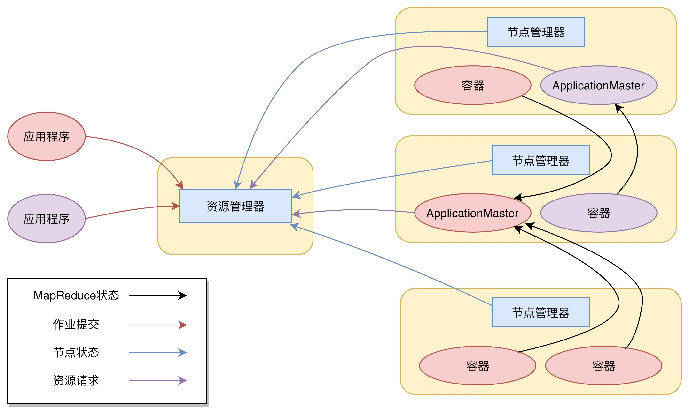

- 00 开篇词 为什么说每个软件工程师都应该懂大数据技术？.md
- 01 大数据技术发展史：大数据的前世今生.md
- 02 大数据应用发展史：从搜索引擎到人工智能.md
- 03 大数据应用领域：数据驱动一切.md
- 04 移动计算比移动数据更划算.md
- 05 从RAID看垂直伸缩到水平伸缩的演化.md
- 06 新技术层出不穷，HDFS依然是存储的王者.md
- 07 为什么说MapReduce既是编程模型又是计算框架？.md
- 08 MapReduce如何让数据完成一次旅行？.md
- 09 为什么我们管Yarn叫作资源调度框架？.md
- 10 模块答疑：我们能从Hadoop学到什么？.md
- 11 Hive是如何让MapReduce实现SQL操作的？.md
- 12 我们并没有觉得MapReduce速度慢，直到Spark出现.md
- 13 同样的本质，为何Spark可以更高效？.md
- 14 BigTable的开源实现：HBase.md
- 15 流式计算的代表：Storm、Flink、Spark Streaming.md
- 16 ZooKeeper是如何保证数据一致性的？.md
- 17 模块答疑：这么多技术，到底都能用在什么场景里？.md
- 18 如何自己开发一个大数据SQL引擎？.md
- 19 Spark的性能优化案例分析（上）.md
- 20 Spark的性能优化案例分析（下）.md
- 21 从阿里内部产品看海量数据处理系统的设计（上）：Doris的立项.md
- 22 从阿里内部产品看海量数据处理系统的设计（下）：架构与创新.md
- 23 大数据基准测试可以带来什么好处？.md
- 24 从大数据性能测试工具Dew看如何快速开发大数据系统.md
- 25 模块答疑：我能从大厂的大数据开发实践中学到什么？.md
- 26 互联网产品 + 大数据产品 = 大数据平台.md
- 27 大数据从哪里来？.md
- 28 知名大厂如何搭建大数据平台？.md
- 29 盘点可供中小企业参考的商业大数据平台.md
- 30 当大数据遇上物联网.md
- 31 模块答疑：为什么大数据平台至关重要？.md
- 32 互联网运营数据指标与可视化监控.md
- 33 一个电商网站订单下降的数据分析案例.md
- 34 A_B测试与灰度发布必知必会.md
- 35 如何利用大数据成为“增长黑客”？.md
- 36 模块答疑：为什么说数据驱动运营？.md
- 37 如何对数据进行分类和预测？.md
- 38 如何发掘数据之间的关系？.md
- 39 如何预测用户的喜好？.md
- 40 机器学习的数学原理是什么？.md
- 41 从感知机到神经网络算法.md
- 42 模块答疑：软件工程师如何进入人工智能领域？.md
- 所有的不确定都是机会——智慧写给你的新年寄语.md
- 第2季回归丨大数据之后，让我们回归后端.md
- 结束语 未来的你，有无限可能.md
09 为什么我们管Yarn叫作资源调度框架？
我们知道，Hadoop主要是由三部分组成，除了前面我讲过的分布式文件系统HDFS、分布式计算框架MapReduce，还有一个是分布式集群资源调度框架Yarn。但是Yarn并不是随Hadoop的推出一开始就有的，Yarn作为分布式集群的资源调度框架，它的出现伴随着Hadoop的发展，使Hadoop从一个单一的大数据计算引擎，成为一个集存储、计算、资源管理为一体的完整大数据平台，进而发展出自己的生态体系，成为大数据的代名词。
所以在我们开始聊Yarn的实现原理前，有必要看看Yarn发展的过程，这对你理解Yarn的原理以及为什么被称为资源调度框架很有帮助。
先回忆一下我们学习的MapReduce的架构，在MapReduce应用程序的启动过程中，最重要的就是要把MapReduce程序分发到大数据集群的服务器上，在Hadoop 1中，这个过程主要是通过TaskTracker和JobTracker通信来完成。
这个方案有什么缺点吗？
这种架构方案的主要缺点是，服务器集群资源调度管理和MapReduce执行过程耦合在一起，如果想在当前集群中运行其他计算任务，比如Spark或者Storm，就无法统一使用集群中的资源了。
在Hadoop早期的时候，大数据技术就只有Hadoop一家，这个缺点并不明显。但随着大数据技术的发展，各种新的计算框架不断出现，我们不可能为每一种计算框架部署一个服务器集群，而且就算能部署新集群，数据还是在原来集群的HDFS上。所以我们需要把MapReduce的资源管理和计算框架分开，这也是Hadoop 2最主要的变化，就是将Yarn从MapReduce中分离出来，成为一个独立的资源调度框架。
Yarn是“Yet Another Resource Negotiator”的缩写，字面意思就是“另一种资源调度器”。事实上，在Hadoop社区决定将资源管理从Hadoop 1中分离出来，独立开发Yarn的时候，业界已经有一些大数据资源管理产品了，比如Mesos等，所以Yarn的开发者索性管自己的产品叫“另一种资源调度器”。这种命名方法并不鲜见，曾经名噪一时的Java项目编译工具Ant就是“Another Neat Tool”的缩写，意思是“另一种整理工具”。
下图是Yarn的架构。

从图上看，Yarn包括两个部分：一个是资源管理器（Resource Manager），一个是节点管理器（Node Manager）。这也是Yarn的两种主要进程：ResourceManager进程负责整个集群的资源调度管理，通常部署在独立的服务器上；NodeManager进程负责具体服务器上的资源和任务管理，在集群的每一台计算服务器上都会启动，基本上跟HDFS的DataNode进程一起出现。
具体说来，资源管理器又包括两个主要组件：调度器和应用程序管理器。
调度器其实就是一个资源分配算法，根据应用程序（Client）提交的资源申请和当前服务器集群的资源状况进行资源分配。Yarn内置了几种资源调度算法，包括Fair Scheduler、Capacity Scheduler等，你也可以开发自己的资源调度算法供Yarn调用。
Yarn进行资源分配的单位是容器（Container），每个容器包含了一定量的内存、CPU等计算资源，默认配置下，每个容器包含一个CPU核心。容器由NodeManager进程启动和管理，NodeManger进程会监控本节点上容器的运行状况并向ResourceManger进程汇报。
应用程序管理器负责应用程序的提交、监控应用程序运行状态等。应用程序启动后需要在集群中运行一个ApplicationMaster，ApplicationMaster也需要运行在容器里面。每个应用程序启动后都会先启动自己的ApplicationMaster，由ApplicationMaster根据应用程序的资源需求进一步向ResourceManager进程申请容器资源，得到容器以后就会分发自己的应用程序代码到容器上启动，进而开始分布式计算。
我们以一个MapReduce程序为例，来看一下Yarn的整个工作流程。
1.我们向Yarn提交应用程序，包括MapReduce ApplicationMaster、我们的MapReduce程序，以及MapReduce Application启动命令。
2.ResourceManager进程和NodeManager进程通信，根据集群资源，为用户程序分配第一个容器，并将MapReduce ApplicationMaster分发到这个容器上面，并在容器里面启动MapReduce ApplicationMaster。
3.MapReduce ApplicationMaster启动后立即向ResourceManager进程注册，并为自己的应用程序申请容器资源。
4.MapReduce ApplicationMaster申请到需要的容器后，立即和相应的NodeManager进程通信，将用户MapReduce程序分发到NodeManager进程所在服务器，并在容器中运行，运行的就是Map或者Reduce任务。
5.Map或者Reduce任务在运行期和MapReduce ApplicationMaster通信，汇报自己的运行状态，如果运行结束，MapReduce ApplicationMaster向ResourceManager进程注销并释放所有的容器资源。
MapReduce如果想在Yarn上运行，就需要开发遵循Yarn规范的MapReduce ApplicationMaster，相应地，其他大数据计算框架也可以开发遵循Yarn规范的ApplicationMaster，这样在一个Yarn集群中就可以同时并发执行各种不同的大数据计算框架，实现资源的统一调度管理。
细心的你可能会发现，我在今天文章开头的时候提到Hadoop的三个主要组成部分的时候，管HDFS叫分布式文件系统，管MapReduce叫分布式计算框架，管Yarn叫分布式集群资源调度框架。
为什么HDFS是系统，而MapReduce和Yarn则是框架？
框架在架构设计上遵循一个重要的设计原则叫“依赖倒转原则”，依赖倒转原则是高层模块不能依赖低层模块，它们应该共同依赖一个抽象，这个抽象由高层模块定义，由低层模块实现。
所谓高层模块和低层模块的划分，简单说来就是在调用链上，处于前面的是高层，后面的是低层。我们以典型的Java Web应用举例，用户请求在到达服务器以后，最先处理用户请求的是Java Web容器，比如Tomcat、Jetty这些，通过监听80端口，把HTTP二进制流封装成Request对象；然后是Spring MVC框架，把Request对象里的用户参数提取出来，根据请求的URL分发给相应的Model对象处理；再然后就是我们的应用程序，负责处理用户请求，具体来看，还会分成服务层、数据持久层等。
在这个例子中，Tomcat相对于Spring MVC就是高层模块，Spring MVC相对于我们的应用程序也算是高层模块。我们看到虽然Tomcat会调用Spring MVC，因为Tomcat要把Request交给Spring MVC处理，但是Tomcat并没有依赖Spring MVC，Tomcat的代码里不可能有任何一行关于Spring MVC的代码。
那么，Tomcat如何做到不依赖Spring MVC，却可以调用Spring MVC？如果你不了解框架的一般设计方法，这里还是会感到有点小小的神奇是不是？
秘诀就是Tomcat和Spring MVC都依赖J2EE规范，Spring MVC实现了J2EE规范的HttpServlet抽象类，即DispatcherServlet，并配置在web.xml中。这样，Tomcat就可以调用DispatcherServlet处理用户发来的请求。
同样Spring MVC也不需要依赖我们写的Java代码，而是通过依赖Spring MVC的配置文件或者Annotation这样的抽象，来调用我们的Java代码。
所以，Tomcat或者Spring MVC都可以称作是框架，它们都遵循依赖倒转原则。
现在我们再回到MapReduce和Yarn。实现MapReduce编程接口、遵循MapReduce编程规范就可以被MapReduce框架调用，在分布式集群中计算大规模数据；实现了Yarn的接口规范，比如Hadoop 2的MapReduce，就可以被Yarn调度管理，统一安排服务器资源。所以说，MapReduce和Yarn都是框架。
相反地，HDFS就不是框架，使用HDFS就是直接调用HDFS提供的API接口，HDFS作为底层模块被直接依赖。
小结
Yarn作为一个大数据资源调度框架，调度的是大数据计算引擎本身。它不像MapReduce或Spark编程，每个大数据应用开发者都需要根据需求开发自己的MapReduce程序或者Spark程序。而现在主流的大数据计算引擎所使用的Yarn模块，也早已被这些计算引擎的开发者做出来供我们使用了。作为普通的大数据开发者，我们几乎没有机会编写Yarn的相关程序。但是，这是否意味着只有大数据计算引擎的开发者需要基于Yarn开发，才需要理解Yarn的实现原理呢？
恰恰相反，我认为理解Yarn的工作原理和架构，对于正确使用大数据技术，理解大数据的工作原理，是非常重要的。在云计算的时代，一切资源都是动态管理的，理解这种动态管理的原理对于理解云计算也非常重要。Yarn作为一个大数据平台的资源管理框架，简化了应用场景，对于帮助我们理解云计算的资源管理很有帮助。
思考题
Web应用程序的服务层Service和数据持久层DAO也是上下层模块关系，你设计的Service层是否按照框架的一般架构方法，遵循依赖倒转原则？
欢迎你写下自己的思考或疑问，与我和其他同学一起讨论。
© 2019 - 2023 Liangliang Lee. Powered by gin and hexo-theme-book.